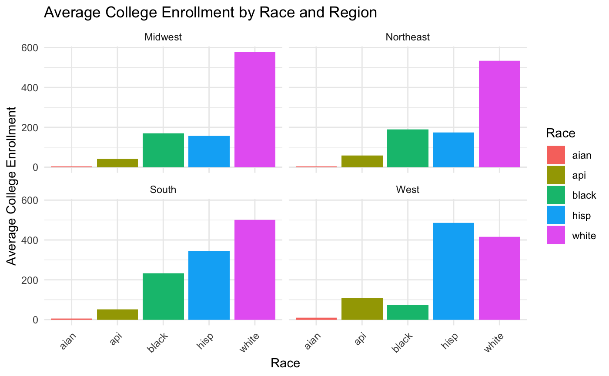

We describe the sources of our data and the cleaning process.
Data Background
Data Set 1: Child Opportunity Index
Link: https://data.diversitydatakids.org/dataset/coi20-child-opportunity-index-2-0-database The Child Opportunity Index 2.0 (COI 2.0) is a comprehensive tool developed in collaboration with the Kirwan Institute for the Study of Race and Ethnicity at Ohio State University, released in January 2020. It measures neighborhood-level resources and conditions essential for a child’s healthy development across the United States. The COI is a composite index of child’s neighborhood opportunity that contains data for every neighborhood (census tract) in the United States from every year for 2012 through 2021. It is comprised of 44 indicators in three domains (education, health and environment, and social and economic) and 14 sub-domains. COI 2.0 compiles data from state and federal sources. This comprehensive data collection process examines approximately 72,000 neighborhood conditions crucial for a child’s well-being, including school quality, green space availability, air quality, and adult employment levels. The resulting Child Opportunity Score, ranging from 1 to 100, provides insight into each U.S. neighborhood and metro area’s position in the national child opportunity landscape, aiming to spotlight disparities within the largest 100 U.S. metros. Particularly, it reveals significant racial inequities with implications for a child’s health, education, and life expectancy.
Simplified Data Dictionary
Variable
Description
ED
Education Domain
HE
Health and Environment Domain
SE
Social and Economic Domain
COI
Overall COI, Weighted average of three domain averaged z-scores
The component indicators data for COI 2.0 is a comprehensive collection of demographic data and raw indicator values from the American Community Survey (ACS) covering the years 2010 and 2015, correlating to the ACS 5-year data from 2008-12 and 2013-17 respectively. Most of the data points related to geographical and demographic information are structured to be similar to our original data set. Notably, this data set also includes raw numeric values for educational and socioeconomic data such as college enrollment in nearby institutions (’ED_COLLEGE’) and poverty rate(’SE_POVRATE’).
This data set serves as a critical tool for understanding demographic distributions and trends, which will aid our analysis of the Child Opportunity Index.
The “Child population data - Number of children aged 0-17 years by race/ethnicity from the American Community Survey” uses Census data to describe the demographic of a micro regional area, including whether the area is one of the 100 largest metro areas in the U.S. The data set includes the racial composition of the area broken down by proportions of children belonging to each race group.
We will use this data set to help inform our analysis of the strength of select indicators in computing the overall Child Opportunity Index.
To add more insight on the data, we will be using 3 different data files under the COI 2.0, which are the index data, child population data, and component indicators data respectively. There are 8 variables that are present in all 3 data sets, which, in essence, represent the geographical location of each metropolitan area. Some important variables to highlight in these data sets are the population of each race group per metro area, health insurance coverage, poverty rate, and median household income. We will keep a close eye on these features to see how they affect a child’s overall opportunity.
Below, we created a graphics with the variable college_enrollment to show the distribution across race and region.
Average College Enrollment by Race and Region

We decided to visualize the average college enrollment across race and region due to the growing weight having a college degree holds in society. Obtaining a college degree is necessary for a majority of careers as it shows that they are an educated and hard working person. It’s considered a threshold for success, and is a result of the opportunities children had growing up.
As seen by the bar graphs, White people consistently have high college enrollment status across the 4 regions. On the other hand, Aian (Native American and Alaska Native) hold the lowest numbers. The reappearing pattern of White and Hispanic students having higher college enrollment numbers compared to the other races is something we found intriguing and hope to explore further.
Data Cleaning Process
In the first step of our data cleaning process, we used read.csv to access our 3 data sets childpop_race.csv, rawindicators.csv, and index.csv. Then, in order to narrow the scope of our analysis, we used filter(year != 2010) to isolate data from the year 2010. We decided to merge all 3 data sets on geoid using inner_join since it was present in all 3 data sets.
library(readr)library(tidyverse)
── Attaching core tidyverse packages ──────────────────────── tidyverse 2.0.0 ──
✔ dplyr 1.1.4 ✔ purrr 1.0.2
✔ forcats 1.0.0 ✔ stringr 1.5.1
✔ ggplot2 3.5.0 ✔ tibble 3.2.1
✔ lubridate 1.9.3 ✔ tidyr 1.3.0
── Conflicts ────────────────────────────────────────── tidyverse_conflicts() ──
✖ dplyr::filter() masks stats::filter()
✖ dplyr::lag() masks stats::lag()
ℹ Use the conflicted package (<http://conflicted.r-lib.org/>) to force all conflicts to become errors
Upon merging all 3 data sets, we had an abundance of duplicated columns. We selected the duplicated columns and placed a negative sign, -, before the column name to indicate it’s being removed.
Additionally, we renamed the columns using rename() to clearly show what the columns are representing. The original column names were difficult to interpret and we found ourselves referring to the data dictionary often. Certain variables, such as z_COI_nat, we decided to keep as is since changing the names to describe the data would make the column names long and repetitive. Instead, we decided to include a simplified version of the data dictionary in our Data page under Data Set 1: Child Opportunity Index.
In the last step of our data cleaning process, we removed any null values in the data. We removed the rows that contained the null values by counting and summing the null rows and then omitting them with na.omit(). We also grouped the different states (including Washington D.C.) by Northwest, Northeast, South, and West regions into a new data frame called region_data. Additionally, we grouped the different racial groups by state to get a total of the different race populations per state to better visualize the distribution of race populations per state.
In our load_and_clean_data.R file, the code snippet utilizes the tidyverse package to handle data manipulation and analysis tasks efficiently. It reads in a RData file named cleaned_merged_dg.RData located within the datasets directory using the load() function. The cleaned data is saved as an .rds file named cleaned_merged_df.rds in the scripts directory using the saveRDS function. This ensures that the cleaned data set can be easily accessed and shared for future analyses. Additionally, the readRDS function is used to read the saved .rds file, enabling the retrieval of the cleaned data set for further processing or exploration.
source("scripts/load_and_clean_data.R",echo =TRUE# Use echo=FALSE or omit it to avoid code output )